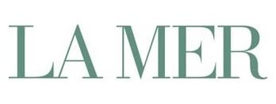
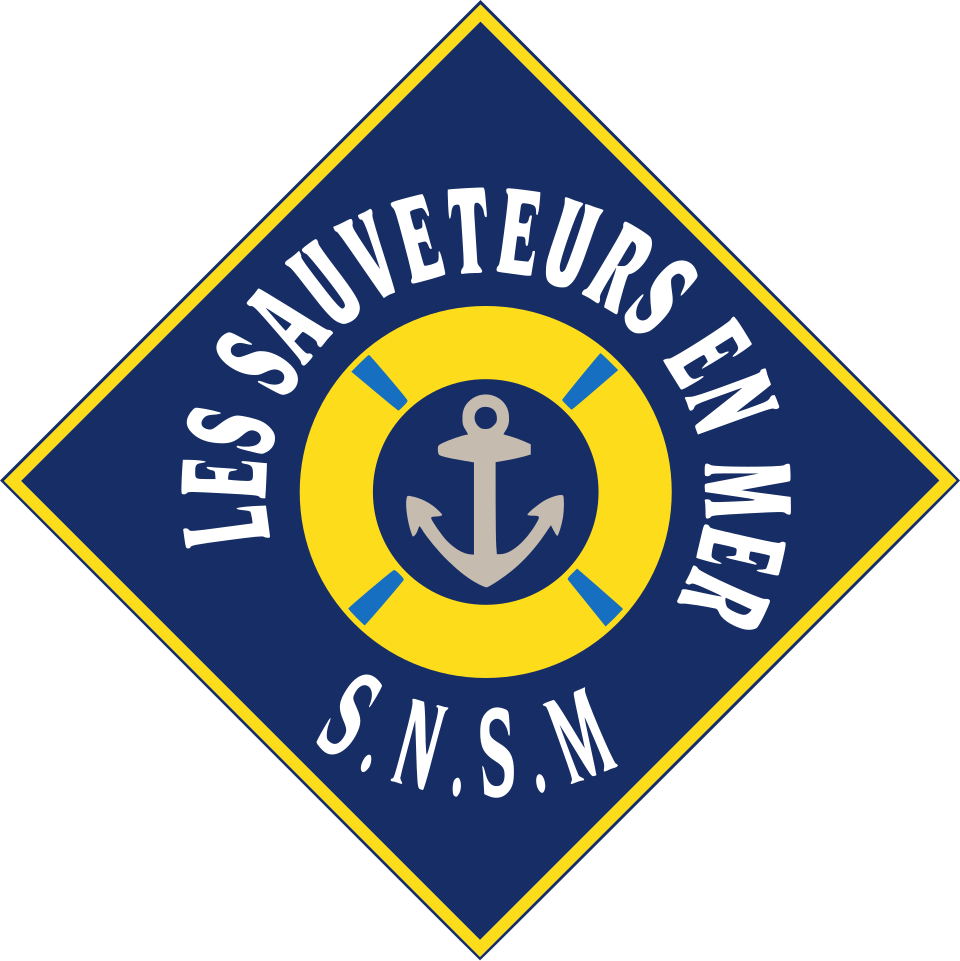

홈 > 브랜드 매거진 > 라 메르
라 메르
라 메르(La Mer)는 발효 해조류 성분 미라클 브로스를 핵심으로 하는 에스티 로더 산하 럭셔리 스킨케어 브랜드이다.
산업 분야 뷰티·퍼스널케어 · 공개 등급 자료 기반 · 브랜드 평가 4.2 ★


한눈에 보는 브랜드
라 메르는 항공우주 물리학자 막스 휴버 박사가 실험실 화상 사고를 치유하기 위해 만든 럭셔리 스킨케어로, 1965년 첫 크림 크렘 드 라 메르를 선보였다. 휴버 박사 타계 후 1995년 에스티로더 컴퍼니즈가 인수해 글로벌 브랜드로 키웠고, 두 차례 전환점은 1965년 제품화와 1995년 인수다.
현재 연 10억 달러를 넘기는 에스티로더의 핵심 럭셔리 자산으로 자리 잡았다.
브랜드 관점
라 메르의 핵심은 12년에 걸친 6천여 회의 실험 끝에 완성한 미라클 브로스 서사다. 손으로 수확한 자이언트 켈프를 3~4개월간 빛과 음파 에너지로 발효시키는 독자 공정이 경쟁사와의 결정적 차별점이다.
같은 초럭셔리 영역에서 라프레리는 캐비아 기반의 스위스 세포 활성화를, 시슬리는 식물 활성 성분 중심의 피토 코스메톨로지를 내세우는 반면 라 메르는 바다 유래 회복과 진정에 정체성을 둔다. 최근 변화로는 제이 추를 첫 남성 앰배서더로 영입하고 안티에이징 캠페인을 강화한 점이 두드러지며, 이는 아시아 고소비층을 겨냥한 행보다.
다만 중국 소비 둔화로 일부 분기 매출이 두 자릿수 감소를 겪어 글로벌 의존 구조의 양면성을 드러냈다. 한국 시장에서는 전지현을 앰배서더로 두고 공식몰을 운영하며 프리미엄 입지를 다지고 있다.
시작과 성장
1950년대, 항공우주 물리학자였던 막스 휴버 박사는 실험실에서 발생한 화학 폭발로 얼굴과 몸에 심한 화상을 입었다. 기성 치료법에 만족하지 못한 그는 직접 피부를 재생할 처방을 찾아 나섰고, 영양이 풍부하고 재생력이 뛰어난 바다 켈프에 주목했다.
이 원료의 힘을 끌어내기 위해 12년에 걸쳐 6천여 회의 실험을 거듭한 끝에, 빛과 음파 에너지로 활성을 높이는 생체에너지 발효 공정인 미라클 브로스를 완성했다. 첫 전환점은 1965년으로, 풍부하고 벨벳 같은 질감의 크렘 드 라 메르를 마침내 공개한 시점이다.
두 번째 전환점은 1991년 휴버 박사 타계 이후 1995년 에스티로더 컴퍼니즈가 브랜드를 인수해 그의 유산을 전 세계로 확장한 일이다. 이로써 한 개인의 치유 여정이 글로벌 럭셔리 브랜드로 도약했다.
브랜드 아이덴티티
라 메르의 가치는 치유와 럭셔리한 순간의 결합에 있으며, 바다에서 길어 올린 회복력이라는 서사가 정체성을 지탱한다. 비주얼 아이덴티티는 절제와 정교함을 지향해 시각적 소음을 걷어내고 차분함을 강조하며, 외치기보다 속삭이는 자신감으로 프리미엄을 표현한다.
로고는 음각 처리와 두꺼운 패키지, 질감 있는 종이로 진열대에서의 격을 높였다. 타깃은 안티에이징을 추구하는 고소비 럭셔리 고객층이며, 아시아 주요 시장에 무게가 실린다.
보이스는 과학적 신뢰와 감성적 우아함을 함께 담아 디지털 우선 경험으로 진화하고 있다.
제품과 서비스
카테고리는 모이스처라이저, 세럼, 아이 트리트먼트, 클렌저로 구성된다. 시그니처는 크렘 드 라 메르로 1온스 약 400달러, 2온스 약 700달러에 판매되며, 더 트리트먼트 로션은 약 130달러부터, 아이 컨센트레이트는 약 275달러 선이다.
더 모이스처라이징 프레시 크림 등 신제품과 더 트리트먼트 로션이 성장을 견인했다. 채널은 공식몰, 백화점, 럭셔리 편집숍 등 프리미엄 유통을 중심으로 운영된다.
현재 상태
본사 브랜드는 에스티로더 컴퍼니즈 소속의 라 메르다. 모회사 에스티로더는 2024 회계연도 순매출 약 156억 달러를 기록했고, 라 메르는 연 10억 달러를 넘긴 빌리언달러 브랜드 반열에 올랐다.
다만 라 메르 단독의 정확한 연간 매출 수치와 한국 시장 매출은 미공개다.
타임라인
BI/CI 변천사
함께 읽을 브랜드
 뷰티·퍼스널케어 · 자료 기반에스티 로더
뷰티·퍼스널케어 · 자료 기반에스티 로더에스티 로더(Estée Lauder)는 1946년 미국에서 창립된 프레스티지 화장품 브랜드이자 글로벌 뷰티 그룹이다.
 뷰티·퍼스널케어 · 자료 기반코스알엑스
뷰티·퍼스널케어 · 자료 기반코스알엑스코스알엑스(COSRX)는 2013년 설립된 한국의 민감성 피부용 스킨케어 브랜드로, 현재 아모레퍼시픽 자회사다.
 뷰티·퍼스널케어 · 자료 기반설화수
뷰티·퍼스널케어 · 자료 기반설화수설화수(Sulwhasoo)는 아모레퍼시픽이 1997년 론칭한 대한민국의 한방 럭셔리 스킨케어 브랜드다. 한방 원료와 프리미엄 포지셔닝으로 아모레퍼시픽을 대표하는 럭셔...
 뷰티·퍼스널케어 · 매거진 완성러쉬
뷰티·퍼스널케어 · 매거진 완성러쉬러쉬는 영국의 뷰티·퍼스널케어 브랜드로, 성분, 사용감, 패키지, 이미지 언어가 구매 판단에 직접 연결되는 영역입니다.
 뷰티·퍼스널케어 · 편집 검수도브
뷰티·퍼스널케어 · 편집 검수도브도브(Dove)는 유니레버가 1957년 출시한 비누·바디케어 퍼스널케어 브랜드이다.
 뷰티·퍼스널케어 · 자료 기반헤라
뷰티·퍼스널케어 · 자료 기반헤라헤라(HERA)는 아모레퍼시픽의 프리미엄 화장품 브랜드로, 1995년 론칭했다.
 뷰티·퍼스널케어 · 자료 기반달바
뷰티·퍼스널케어 · 자료 기반달바달바(d'Alba)는 달바글로벌이 전개하는 대한민국의 프리미엄 비건 스킨케어 브랜드다. 2016년 론칭했으며 화이트 트러플 성분의 미스트 세럼으로 글로벌 베스트셀러를...
뷰티·퍼스널케어 · 자료 기반마몽드마몽드(Mamonde)는 꽃을 콘셉트로 한 아모레퍼시픽의 화장품 브랜드로, 1991년 출시됐다.